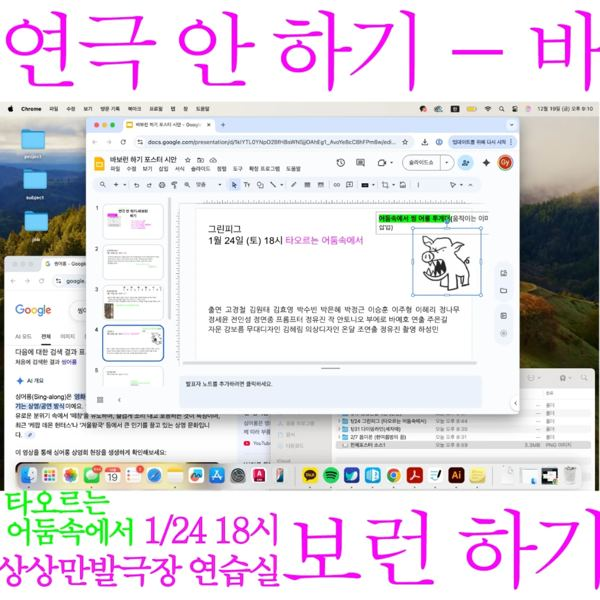

그린피그 > 아카이브 > 바보런하기-타오르는 어둠 속에서
안토니오 부에로 바예호 작

연극 안 하기, 바보런하기. 안토니오 부에로 바예호의 희곡을 읽고 함께 해보는 자리. 시각장애인 학생들이 마치 앞을 보는 것처럼 살아가는 학교에 새 학생 이그나시오가 들어오면서 이야기가 시작된다.
2026.1.24 / 상상만발극장 연습실 - 연극 안 하기, 바보런하기
이전: 〈초록이가 거짓말을 하면 우린 모두 박수를 치는 거야〉 | 다음: 〈진노 震怒〉
아카이브로 돌아가기
최종 수정 2026.11.9